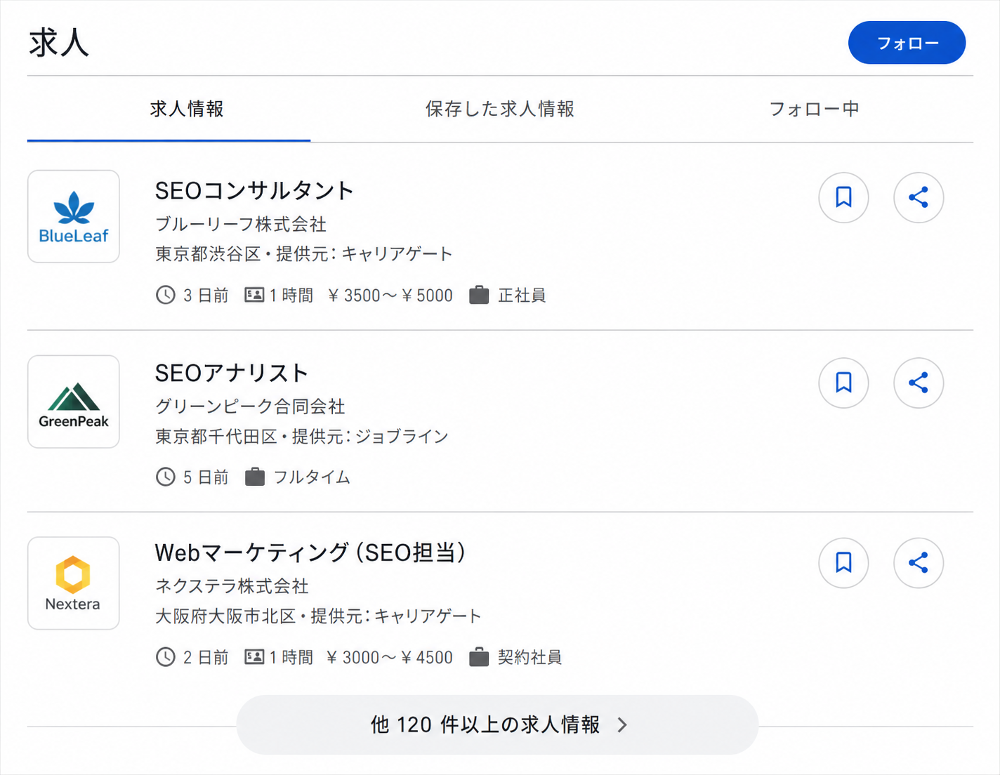

構造化データ
基本：構造化タグと構造化マークアップの違い、実践：JSON-LDによるOrganization・WebSite・Breadcrumb・Product・Article等の実装、検証ツール
基本：構造化データとは
構造化データとは、ページ内の情報が「何を意味しているか」を、検索エンジンにも分かる形式で明示するためのマークアップです。
構造化データ（構造化マークアップ）
検索エンジンやクローラーがコンテンツの内容を理解しやすくするための、決められた形式のデータ。例えば「これは記事のタイトルである」「これは著者名である」といった情報の意味を、機械にも分かる形で伝えます。
リッチリザルト
構造化データを実装することで、検索結果に表示される可能性がある拡張表示。星評価やパンくずリスト、FAQの折りたたみ表示など、通常のテキストリンクより多くの情報を表示できます。
エンリッチリザルト
リッチリザルトのうち、求人情報やレシピなど、ユーザーが検索結果内で直接操作できる双方向性を持つもの。ポップアップやインタラクティブなウィジェットとして、より視覚的に際立つ形式で表示されます。

構造化データが利用されるのは検索結果の拡張表示だけではありません。パソコンでは画面右側、スマートフォンでは上部に表示されるナレッジパネル（Googleが収集した知識データベース「ナレッジグラフ」をもとにした拡張表示）にも、構造化マークアップの情報が活用されていると考えられています。
Google Search Central（公式ドキュメント）は、構造化データの主なフォーマットとしてJSON-LDを推奨しています。JSON-LDは、HTMLの本文とは別に、ページの意味情報だけをまとめて記述できる形式です（詳しくは次のセクションで説明します）。